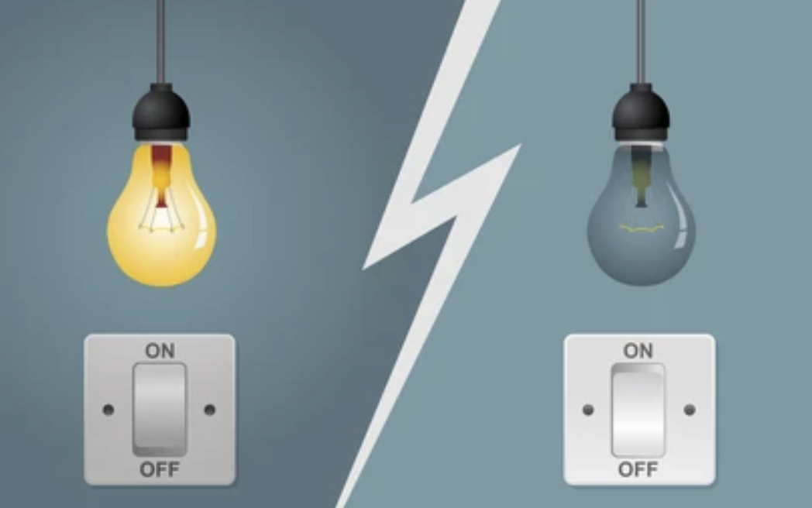
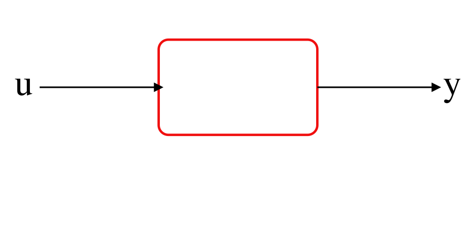
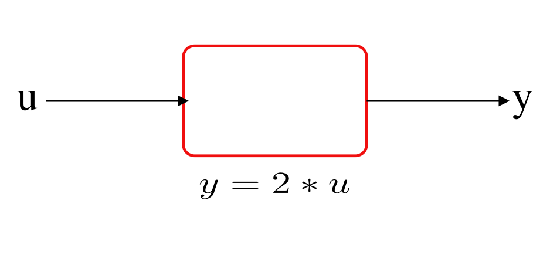
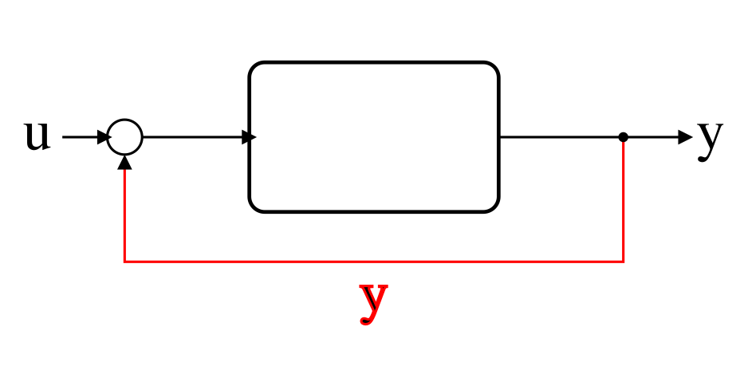
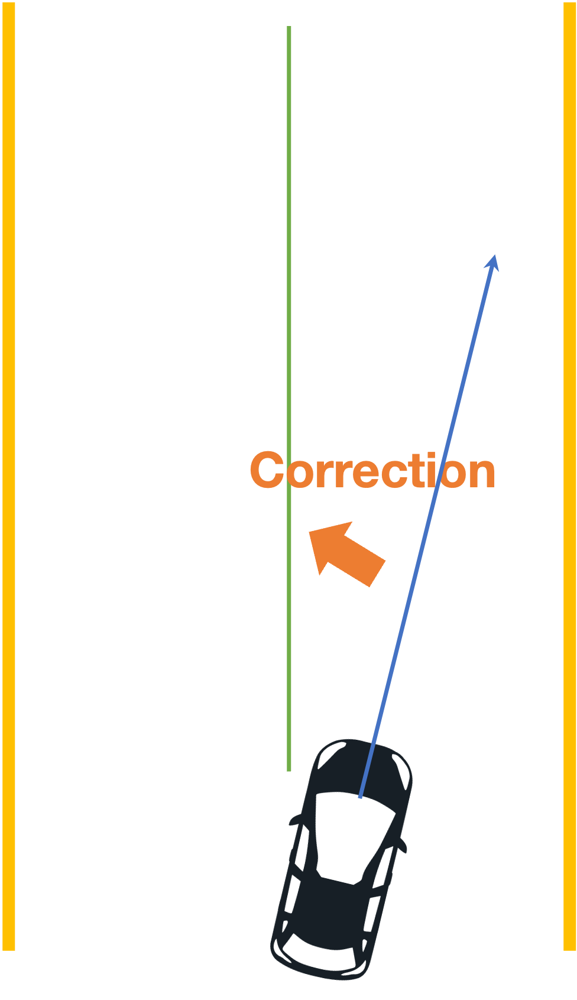
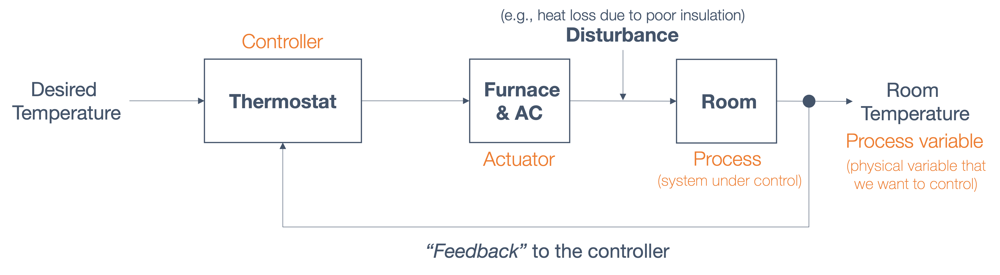
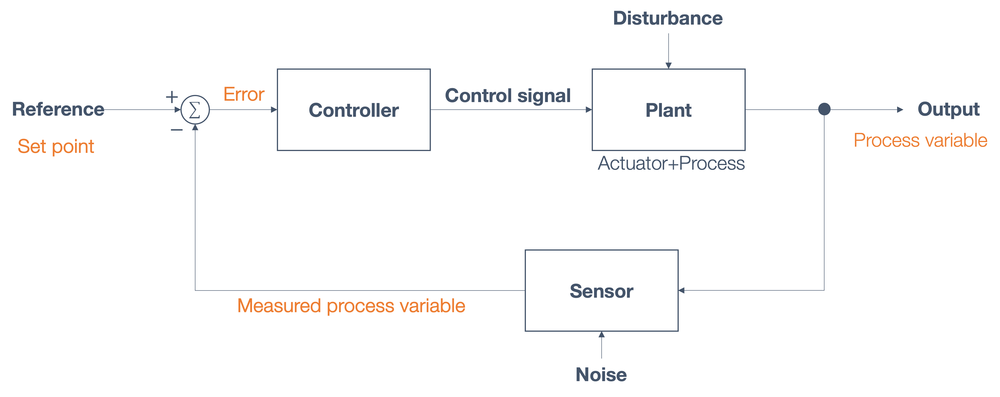
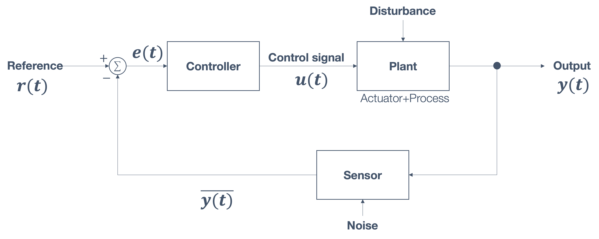
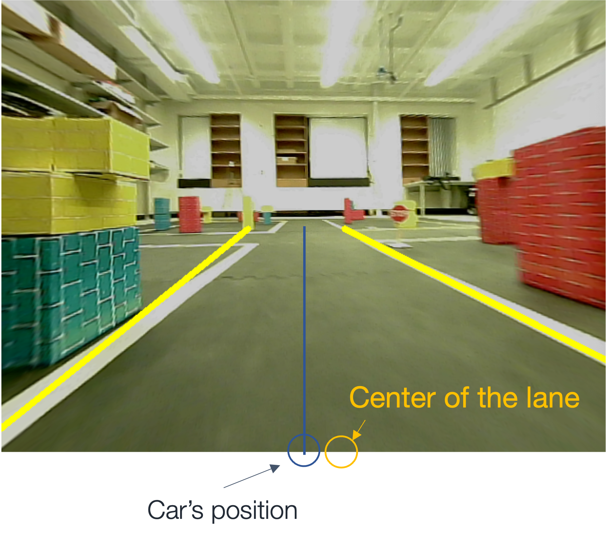

## control theory ## **Design of Autonomous Systems** ### csci 6907/4907-Section 86 ### Prof. **Sibin Mohan** --- consider a simple problem → how do you balance a ball? Note: - discuss pen balance - show example in class - what is the "input"? - what is the "output"? - what is the "desired state"? --- consider a simple problem → how do you balance a ball? <img src="img/controls/soccer_ball_balance.gif" width="500"> --- consider a simple problem → how do you balance a ball? <img src="img/controls/soccer_ball_balance.gif" width="500"> ok, that's a bit hard! --- let's simplify → in a **one-dimensional** plane? --- balance a ball → in the **middle** of a table <img src="img/controls/ball/ball.unstable.gif" width="900"> --- balance a ball → in the **middle** of a table <img src="img/controls/ball/ball.unstable.gif" width="900"> pretty good attempt but **unstable**! --- ### goals - the ball remains **stable** and - it is in the **middle** of the table --- options 1. tilt the table down on the left (**anti-clockwise**) 2. title the table down on the right (**clockwise**) --- options 1. tilt the table down on the left (**anti-clockwise**) 2. title the table down on the right (**clockwise**) --- options 1. tilt the table down on the left (**anti-clockwise**) 2. title the table down on the right (**clockwise**) 3. control the **speed** at which the table tilts --- ### parameters for the problem --- ### parameters for the problem |type | options | |-----|---------| | **inputs** | speed (clockwise, anticlockwise) | --- ### parameters for the problem |type | options | |-----|---------| | **inputs** | speed (clockwise, anticlockwise) | | **output** | ball velocity, acceleration | || --- we need to **control** outputs → modifying inputs to system --- ## control theory --- ## control theory - **multidisciplinary** field → applied mathematics+engineering --- ## control theory - **multidisciplinary** field → applied mathematics+engineering - **wide** use → _e.g.,_ mechanical, aerospace, electrical, chemical, _etc._ --- ## control theory - **multidisciplinary** field → applied mathematics+engineering - **wide** use → _e.g.,_ mechanical, aerospace, electrical, chemical, _etc._ - even biological sciences, finance, you name it! --- anything that you, --- anything that you, - **want to control** and --- anything that you, - **want to control** and - can **develop a model** --- anything that you, - **want to control** and - can **develop a model** develop a <font style="background-color:orange">**controller**</font> → using control theory --- lots of **everyday** applications as well --- lots of **everyday** applications as well adaptive cruise control, thermostats, ovens, lawn sprinkler systems, _etc._ --- ### control theory | **basic idea** --- ### control theory | **basic idea** - **understand** a process or a system → develop a **model** > **relationships between → inputs and outputs** --- ### control theory | **model** --- ### control theory | **model** **adjust the inputs** :model → to get **desired outputs** --- relationship between inputs and outputs → **empirical analysis** --- relationship between inputs and outputs → **empirical analysis** 1. **make changes** to the input --- relationship between inputs and outputs → **empirical analysis** 1. **make changes** to the input 2. wait for the system to **respond** --- relationship between inputs and outputs → **empirical analysis** 1. **make changes** to the input 2. wait for the system to **respond** 2. **observe changes** in the output Note: - Even if the model is based on an equation from physics, the parameters within the model are still identified experimentally or through computer simulations. --- this is **not** what we **really** want! --- this is **not** what we **really** want! so, what is is that we want? --- what is the **objective**? --- what is the **objective**? _e.g.,_ balance the ball --- what is the **objective**? _e.g.,_ balance the ball → control the **output** --- control the **output** → tune the **input**! --- ### simple example | **lightbulb**  --- ### simple example | **lightbulb** assume we don't know relationship between **bulb** and **switch** --- assume we don't know relationship between **bulb** and **switch** conduct a few experiments → capture the relationship --- results of empirical analysis |switch state <br> (input) | bulb state <br> (output)| |---------------------|--------------------| | off | off | | on | on | || --- results of empirical analysis |switch state <br> (input) | bulb state <br> (output)| |---------------------|--------------------| | off | off | | on | on | || "model" of input (switch state) → output (ligthbulb state) --- results of empirical analysis |switch state <br> (input) | bulb state <br> (output)| |---------------------|--------------------| | off | off | | on | on | || "model" of input (switch state) → output (ligthbulb state) **not** the control model --- **not** the control model ### why? --- we care about → if **bulb** is <scb>on</scb> (or <scb>off</scb>) --- we care about → if **bulb** is <scb>on</scb> (or <scb>off</scb>) **not** if switch is <scb>on</scb> (or <scb>off</scb>) --- so to develop a **control model** → **invert** above relationship --- ### **control model** | lightbulb --- ### **control model** | lightbulb |desired output <br> lightbulb state| corresponding input <br> switch state| |---------------------|--------------------| --- ### **control model** | lightbulb |desired output <br> lightbulb state| corresponding input <br> switch state| |---------------------|--------------------| | on | on | | off | off | || --- let's **formalize** things a little --- consider following mathematical model <img src="img/controls/equations/svgs/equations.002.svg" width="800"> Note: - The model says that if we change the input `u` the output `y` will change to be **twice** the value of the input `u`. --- consider following mathematical model <img src="img/controls/equations/svgs/equations.002.svg" width="800"> remember → we want to get to a **specific output**, say $y^*$ --- _manipulate_ model → to get **control model** --- _manipulate_ model → to get **control model** $$u = \frac{y^*}{2}$$ --- $$u = \frac{y^*}{2}$$ for any **desired** value of $y^*$ → can identify input <scb>u</scb> --- $$u = \frac{y^*}{2}$$ for any **desired** value of $y^*$ → can identify input <scb>u</scb> we have jus designed our **first controller**! --- ### desired value, $y^*$ → **setpoint** --- ### course map <img src="img/stack_architecture/stack_overview.6.png" width="700"> --- ### Open-Loop vs Closed-Loop Control --- if our model is accurate+no disturbances --- if our model is accurate+no disturbances $$ y = y^*$$ --- if our model is accurate+no disturbances $$ y = y^*$$ nothing _guarantees_ this --- ## open loop controller --- ## open loop controller desire certain outcome → _hope_ controller actually gets there --- ## open loop controller  --- ## open loop controller  --- what we _really_ want → **ensure** controllers gets to setpoint Note: - problem is that while the input drives the output, there is no way to _guarantee_ that the controller will get to the set point --- the solution → **feedback** --- the solution → **feedback** from output → input --- ## open loop controller --- ## open loop controller - **adjust** <scb>u</scb> --- ## open loop controller - **adjust** <scb>u</scb> - ensure that we get to $y^*$ --- ## open loop controller - **adjust** <scb>u</scb> - ensure that we get to $y^*$ (or, at least as close to it as possible) --- ## open loop controller feedback from → output of controller model we created --- ## open loop controller feedback from → output of controller model we created <img src="img/controls/controls_closedloop/pngs/controls.closedloop.1.png"> --- ## open loop controller feedback from → output of controller model we created  --- ## open loop controller feedback from → output of controller model we created <img src="img/controls/controls_closedloop/pngs/controls.closedloop.final.png"> feedback can be positive or negative --- how to ensure car remains in **center** of lane? <img src="img/controls/feedback_lane/car_road.1.png" width="400"> --- how to ensure car remains in **center** of lane? <img src="img/controls/feedback_lane/car_road.1.png" width="400"> apply a **correction** to direction of motion --- apply a **correction** to direction of motion  --- apply a **correction** to direction of motion - **how** do we apply the corrections? - **how much**? - **when** do we **stop**? --- ## Feedback Control --- ## Feedback Control - _compare_ system state to the desired state --- ## Feedback Control - _compare_ system state to the desired state - apply a _change_ to system inputs → counteract deviations --- ## Feedback Control - _compare_ system state to the desired state - apply a _change_ to system inputs → counteract deviations - repeat until desired outcome → setpoint --- _e.g.,_ temperature control of a room --- _e.g.,_ temperature control of a room <img src="img/controls/feedback_temp/temperature.1.png" width="700"> --- _e.g.,_ temperature control of a room <img src="img/controls/feedback_temp/temperature.2.png" width="900"> Note: - thermostat needs to control/provide inputs to a furnace/AC, --- _e.g.,_ temperature control of a room <img src="img/controls/feedback_temp/temperature.3.png" width="1100"> Note: - which then affects the temperature in the room: --- _e.g.,_ temperature control of a room <img src="img/controls/feedback_temp/temperature.3.png" width="1100"> so we're...done? --- real world has **disturbances** <img src="img/controls/feedback_temp/vader_disturbance_force.jpg" width="700"> --- disturbances → heat loss, bad insulation, physical problems, _etc._ <img src="img/controls/feedback_temp/temperature.4.png" width="1500"> --- disturbances → heat loss, bad insulation, physical problems, _etc._ <img src="img/controls/feedback_temp/temperature.4.png" width="1500"> input **not sufficient** to achieve set point --- provide "**feedback**" to controller <img src="img/controls/feedback_temp/temperature.5.png" width="1500"> Note: - Essentially the temperature reading of the room, _after_ the thermostat and furnace/AC have completed their operations based on the original inputs (desired temperature). --- ### some **technical** terms  Note: -The "controller" is based on the "control model" that we developed earlier. It sends commands ("_actuation signals_") to an actuator and then affects the _process under control_. Finally, the _process variable_ (the "output" from the earlier discussions) is what we want to drive towards the set point. --- another example → cruise control <img src="img/controls/feedback_temp/cruise_control.png" width="1500"> --- another example → cruise control <img src="img/controls/feedback_temp/cruise_control.png" width="1500"> **note** → how the feedback reaches controller --- ## closed-loop feedback control system <img src="img/controls/closed_loop_feedback.1.png" width="1500"> --- ## closed-loop feedback control system some of these inputs/edges have **specific names**  --- main goal → **error is minimized** (ideally <scb>0</scb>) ---  --- ||| |--------|---------| ||<table><tr><th>quantity</th><th>definition</th></tr> <tr><td>$r(t)$</td><td><strong>reference</strong>/set point</td></tr><tr><td>$e(t)$</td><td><strong>error</strong></td></tr><tr><td>$u(t)$</td><td><strong>control signal</strong>/"input"</td></tr><tr><td>$y(t)$</td><td>(expected/final) <strong>output</strong></td></tr><tr> <td>$\overline{y(t)}$</td><td>"feedback"/<strong>estimate</strong></td></tr></table>| || --- ## Feedback Control for Lane Following --- ## Feedback Control for Lane Following we want to keep car → center of its lane --- question → _how do you find the **center** of lane?_ --- consider road with lane markings on either side, <img src="img/controls/feedback_lane/lane.1.png" width="900"> --- consider road with lane markings on either side, <img src="img/controls/feedback_lane/lane.1.png" width="900"> assume → can track white lines --- need to find the center of the lane, as marked in the figure: <img src="img/controls/feedback_lane/lane.2.png" width="1500"> --- need to find the center of the lane, as marked in the figure: <img src="img/controls/feedback_lane/lane.2.png" width="1200"> $$x_{center} = \frac{x_{left-end}+x_{right-end}}{2}$$ --- car need not be in _actual_ center of the lane, <img src="img/controls/feedback_lane/lane.3.png" width="1400"> --- assuming camera is mounted → center of car,  --- assuming camera is mounted → center of car, car's position: $x_{car} = \frac{width}{2}$ --- we calculate the **cross-track error** (CTE), $$CTE = x_{car} - x_{center}$$ --- $$CTE = x_{car} - x_{center}$$ what happens when, - $CTE > 0$ - $CTE < 0$? --- keeping the car in center of lane, - **CTE → as small as possible** and - applying **corrections** <br> --- \$64,000 question → **how**? --- ## feedback control --- problem statement: given the CTE, how do we compute the **control** signal <br> so the car _stays in the middle of the lane_? --- final "corrections", when applied, may look something like: <img src="img/controls/feedback_lane/car_road.3.png" width="400"> --- start with one goal → **lateral position control** --- start with one goal → **lateral position control** <img src="img/controls/feedback_lane/lateral_axis.1.png" width="1300"> --- start with one goal → **lateral position control** |||| |-----|-----|-----| |process variable| $\textbf{y(t)}$ | $y$ position at time, $t$| --- start with one goal → **lateral position control** |||| |-----|-----|-----| |process variable| $\textbf{y(t)}$ | $y$ position at time, $t$| |goal | $y = 0$| keep the car at position <scb>0</scb>| <img src="img/controls/feedback_lane/lateral_axis.1.png" width="700"> --- start with one goal → **lateral position control** |||| |-----|-----|-----| |process variable| $\textbf{y(t)}$ | $y$ position at time, $t$| |goal | $y = 0$| keep the car at position <scb>0</scb>| |control signal| $u(t)$ | steering | || --- say we have the car's _start_ and _end_ positions, <img src="img/controls/feedback_lane/lateral_axis.2.png" width="1300"> --- we know relationship between → $u(t)$ and $y(t)$ <img src="img/controls/feedback_lane/lateral_axis.3.png" width="1000"> --- we know relationship between → $u(t)$ and $y(t)$ <img src="img/controls/feedback_lane/lateral_axis.3.png" width="1000"> we want $u(t)$ to be **negative** → $y$ tends towards eventual goal, $y = 0$. --- so, what should be our **control input**? $$e(t) = ?$$ --- input → _decreasing value of the feedback_ $$e(t) = -y(t)$$ --- <img src="img/controls/feedback_lane/lateral_axis.4.png" width="1300"> --- <img src="img/controls/feedback_lane/lateral_axis.4.png" width="1300"> ## Proportional (P) Control --- ## Proportional (P) Control correction is **proportional** to **size of error**, _i.e.,_ <img src="img/controls/feedback_lane/p_control.1.png" width="1300"> --- ## Proportional (P) Control correction is **proportional** to **size of error**, _i.e.,_ <img src="img/controls/feedback_lane/p_control.2.png" width="1300"> --- apply **proportional control** → lateral control <img src="img/controls/feedback_lane/p_lateral_axis.1.png" width="1300"> --- apply **proportional control** → lateral control <img src="img/controls/feedback_lane/p_lateral_axis.1.png" width="1300"> following choices: - $K_p > 0$ - $K_p < 0$ --- apply **proportional control** → lateral control <img src="img/controls/feedback_lane/p_lateral_axis.1.png" width="1300"> following choices: - <font style="background:orange">$K_p > 0$</font> - $K_p < 0$ --- following from $e(t) = -y(t)$, $$ K_p e(t) = - K_p y(t)$$ --- car moves **towards reference/goal**, $y=0$ <img src="img/controls/feedback_lane/p_lateral_axis.2.png" width="1300"> --- let's consider a few situations: --- 1. what if $K_p$ → **too small** (small _"gain"_)? --- 1. what if $K_p$ → **too small** (small _"gain"_)? <img src="img/controls/feedback_lane/p_lateral_axis.3.png" width="1300"> --- 1. what if $K_p$ → **too small** (small _"gain"_)? <img src="img/controls/feedback_lane/p_lateral_axis.3.png" width="1300"> response is **too slow**/gradual → may _never_ reach goal! --- 2. what if $K_p$ → **too large** (large _"gain"_)? --- 2. what if $K_p$ → **too large** (large _"gain"_)? <img src="img/controls/feedback_lane/p_lateral_axis.4.png" width="1300"> --- 2. what if $K_p$ → **too large** (large _"gain"_)? <img src="img/controls/feedback_lane/p_lateral_axis.4.png" width="1300"> response is **too sudden** → system may **overshoot** the goal! --- so, _can the car be stabilized at $y=0$?_ --- so, _can the car be stabilized at $y=0$?_ **unlikely** using _only_ proportional control method since, |gain|effect| |----|------| |small| **stead-state error**| |large| **oscillations**| || --- how can we **reduce oscillations** --- how can we **reduce oscillations** <img src="img/controls/feedback_lane/d_lateral_axis.1.png" width="1300"> Note: can we get to the following situation (smoother, _actual_ approach to the goal)?